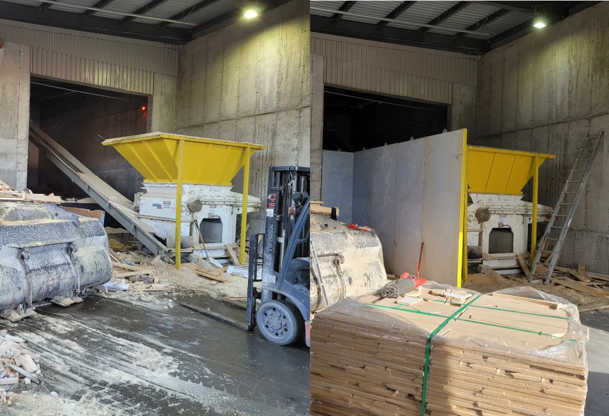
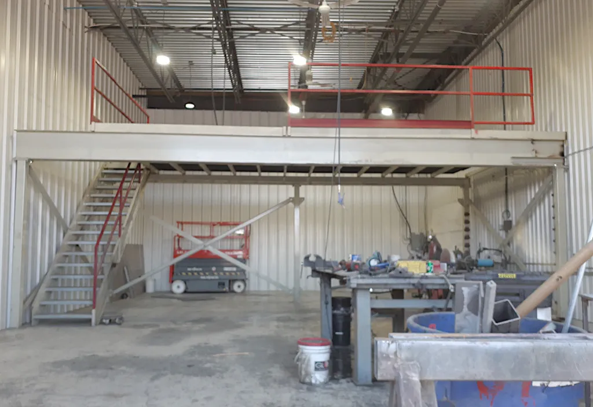
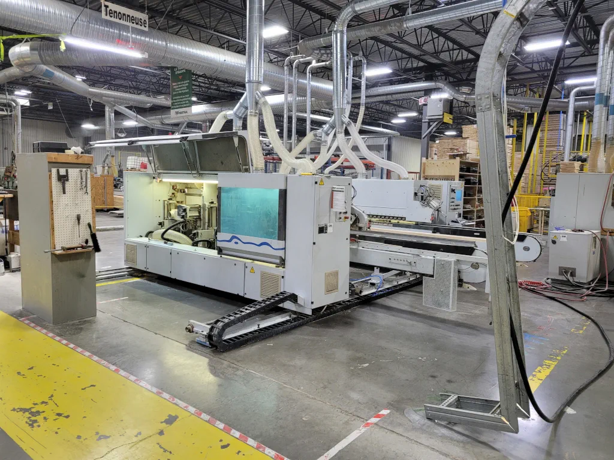

L’installation demande de la précision et une bonne compréhension du milieu. Mécanique Luc Vallerand met en place des pièces et des structures métalliques en atelier ou directement sur votre site, en tenant compte de l’espace disponible, de l’usage prévu et des contraintes de l’environnement. Nous accompagnons les entreprises de la Beauce et de la région de Québec depuis 2019.
Avant l’installation, nous validons les dimensions, les points d’appui et la séquence de montage. Cette préparation permet de limiter les manipulations inutiles et de travailler de façon sécuritaire, sans perturber inutilement vos opérations.
Une installation réussie ne se limite pas à poser une pièce : elle doit rester stable, accessible et adaptée à son usage. Nous vérifions donc l’alignement, les fixations et le comportement général de l’ensemble avant de quitter le site. Si un ajustement est nécessaire, il est traité avant la remise.
Oui, selon la nature du mandat. Nous planifions l’intervention avec vous afin de limiter les impacts sur vos activités.
Contactez-nous avec les plans et les caractéristiques de la structure. Nous validons la faisabilité et les conditions d’installation avant de confirmer le mandat.
Un accès dégagé, les dimensions réelles et les contraintes du site nous aident à planifier le travail. Nous précisons les besoins lors de la soumission.



Appelez-nous ou écrivez-nous pour discuter de votre besoin et obtenir une soumission.